Apollo
A full brand identity system for Apollo — a Science-Fiction Fantasy Library of the 21st Century, located in the heart of San Francisco, CA. The project spans the complete brand architecture: research & mind mapping, combination marks, color system, typography, program logos, iconography, a campaign poster series, and a speculative wayfinding system.
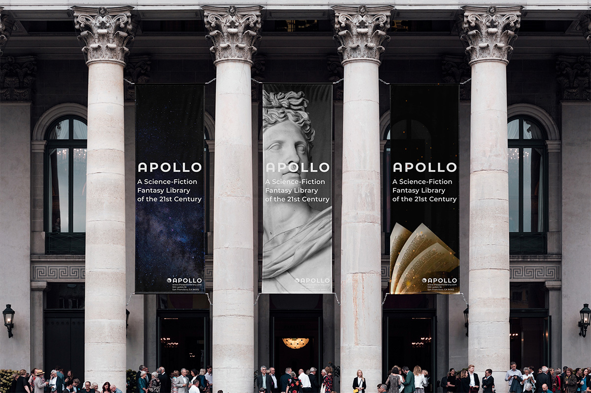
Project Overview & Concept
Mission Statement: Apollo is a Science-Fiction Fantasy Library of the 21st Century, in the heart of San Francisco, CA. Apollo aims to foster a community where children and adults are encouraged to dream, create, learn, and collaborate.
The brand needed to communicate wonder, curiosity, and the joy of discovery — while building a visual system sophisticated enough to function across every library touchpoint, from permanent wayfinding to campaign posters and program materials.
Knowledge + Science + Fantasy = Apollo
The project was developed as part of a branding design course in the MFA Communication Design program at Pratt Institute, with deliverables spanning visual identity, print, and environmental design.
Research & Mind Map
The project began with an extensive research and mind-mapping phase — exploring the visual language of space, science, discovery, and fantasy. Key territories included planetary systems, scientific instruments, geometric abstraction, and the imaginative energy of science fiction.
Color System
The color palette is built around a bold, optimistic set of primary and secondary hues — communicating both the serious science behind the library and the joyful, energetic spirit it aims to inspire. The system scales across digital and large-format print contexts.
Typography
The type system pairs a geometric display face for headlines with a highly readable humanist sans for body copy and exhibit labels — working across all scales from large wayfinding totems to small room identifiers.
Icon System
A custom icon set supports the library's navigation and programming categories — covering subjects from astronomy to chemistry, biology to physics. All icons are drawn on a consistent grid, calibrated to read clearly at wayfinding scale.
Combination Mark
The combination mark brings together a custom logotype and a geometric symbol inspired by orbital paths and the arc of discovery. The system includes primary, stacked, and symbol-only variants — each tested across signage and print contexts.
Program Logos
Program logos extend the identity across Apollo's individual departments and programming areas — each maintaining a visual connection to the core mark while developing its own distinct character.
Wayfinding System
A speculative wayfinding system demonstrates how the brand scales into the library environment — color-coded zones, icon-based navigation, and consistent typography across signage at multiple scales.
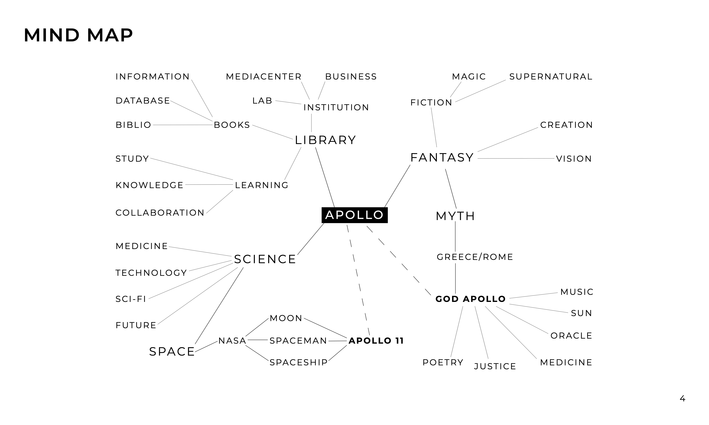
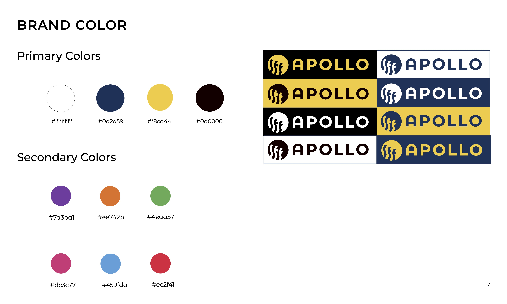
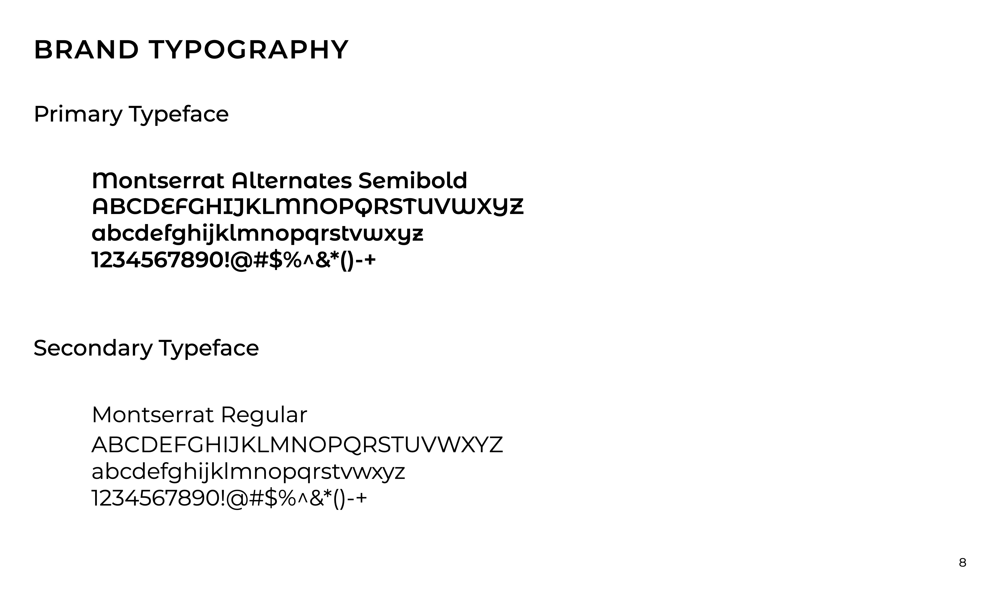
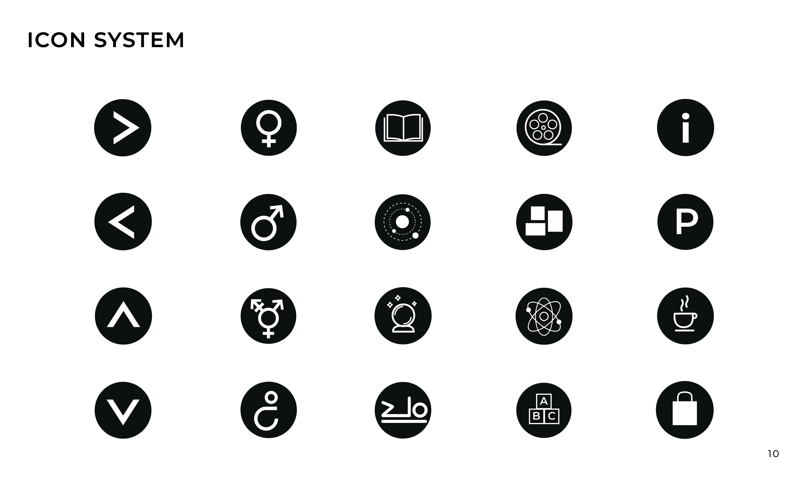
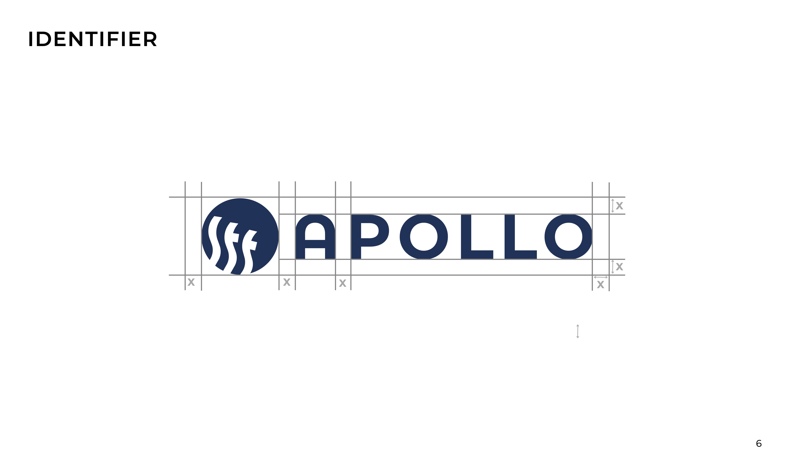

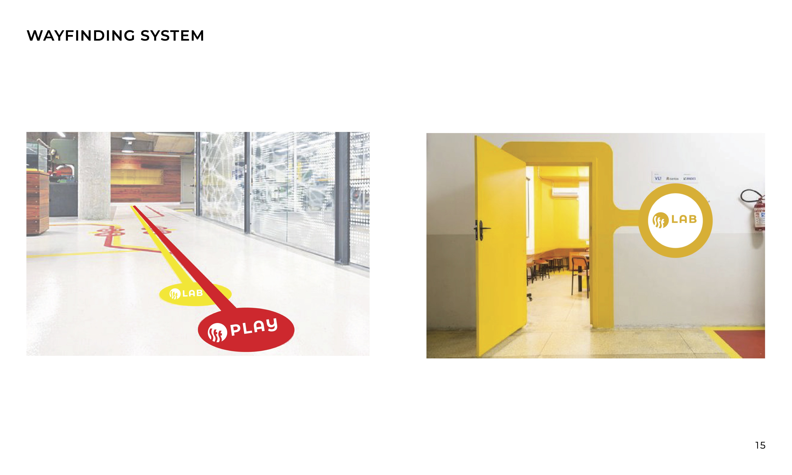
Campaign Posters
Three posters for Apollo's advertisement campaign apply the brand system to real-world contexts — demonstrating how the visual identity translates across event announcements and public-facing print materials.
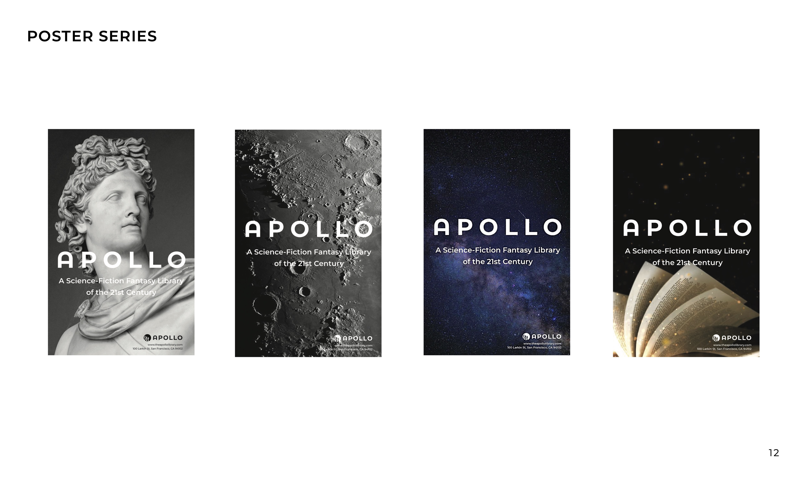
Campaign — In Context
Apollo's campaign posters applied across real-world environments — city streets, transit banners, and public poster frames.
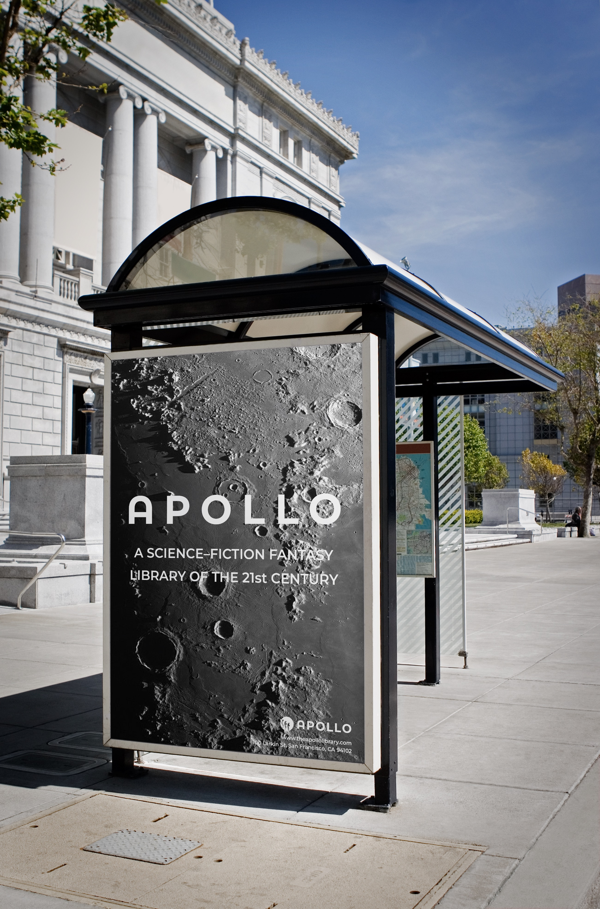
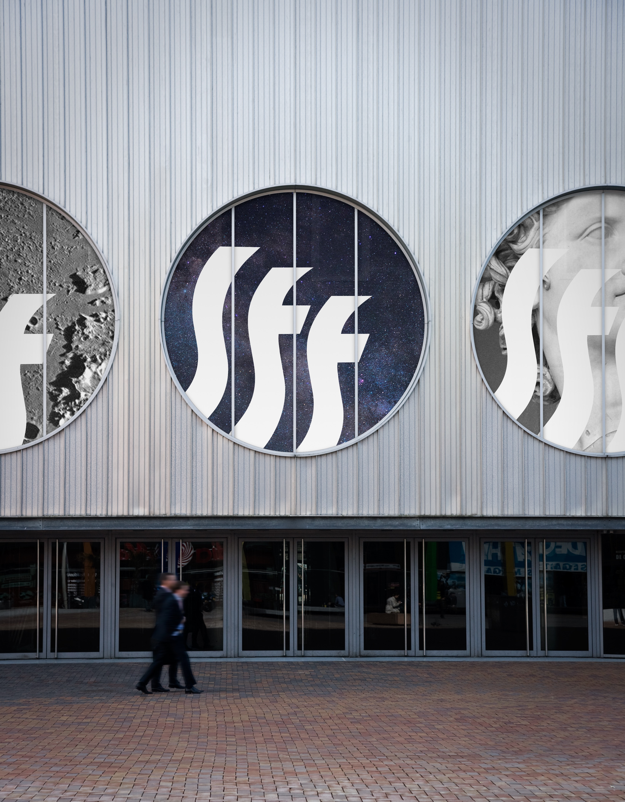
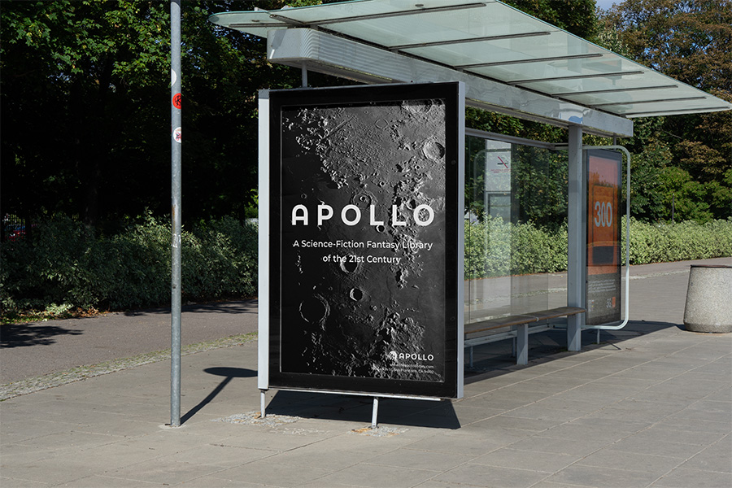
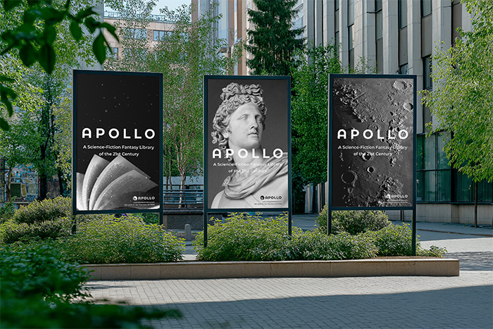
Final Outcome & Reflection
Apollo is the most comprehensive brand system I've designed — spanning identity, iconography, print, and environmental design. Working across all these deliverables simultaneously required thinking systemically: every decision in one area had consequences in another, and the system only worked if it held together as a whole.
What I learned: Brand identity is not a logo. It is a system of decisions that must hold together across every surface it touches — from a poster to a building. Designing the wayfinding system pushed me to think beyond the 2D page and consider how a brand inhabits physical space, and how visitors actually move through and read an environment. Apollo — a library built on knowledge, science, and fantasy — demanded a visual language that could hold all three.